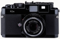

器材库 > 旁轴胶片相机 > Bessa R2M

规格总览
产品类型
可换镜头旁轴胶片相机
发布日期
2006-05-23
厂家推荐价格
138,000.00 （日元）
使用胶卷/胶片
35mm
镜头卡口
VM
取景规格
取景器
实像距离计式逆向透视取景器
取景范围
87%
取景放大倍率
0.7倍
取景框
对应35、50、75、90mm明亮框转换视差自动修正
曝光控制
测光系统
TTL
测光模式
中央重点测光
测光范围
1EV~19EV
ISO感光度
25-1600
快门
快门类型
机械控制，纵走式，焦平面快门
快门速度
B, 1 - 1/2000秒
闪光同步速度
1/125秒
B门
有
过片系统
回片
按下倒片钮转动回片把柄，倒片钮提起回片把柄自动复位
卷片器
可外接插刀式卷片器
胶卷计数
顺算式，开启后盖自动归零
电源
电池
2枚碱性电池（LR44）或氧化银电池（SR44）
外观
颜色
银色, 黑色
尺寸
135.5×81×33.5mm
重量
430g
caiqiang19822013-08-21 19:544.58 分
操作性 4.50功能性 4.50美观性 4.50趣味性 4.50耐用性 4.50性价比 5.00
产品图 / 样片
福伦达 Bessa R2M
评测 / 相关文章
- ［资讯］确善能多款重量级镜头样品CP+亮相 （存档）
- ［资讯］福伦达正式进入中国市场 （存档）
相关文章
- ［资讯］确善能多款重量级镜头样品CP+亮相 （存档）
- ［资讯］福伦达正式进入中国市场 （存档）
- ［资讯］限量版Bessa R3M与R2M以及配套镜头 （原站已下线）